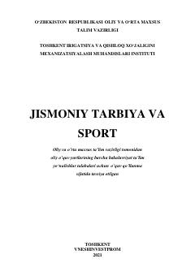

JTOliy ta'lim muassasalari uchun jismoniy tarbiya va sport bo'yicha o'quv qo'llanma.
Ushbu o'quv qo'llanma oliy ta'lim muassasalari talabalari uchun jismoniy tarbiya va sport mashg'ulotlarini tashkil etish bo'yicha nazariy va amaliy tavsiyalarni o'z ichiga oladi. Kitobda valeologiya asoslari, sog'lom turmush tarzi hamda sport turlari bo'yicha texnik-taktik tayyorgarlik masalalari batafsil yoritilgan.